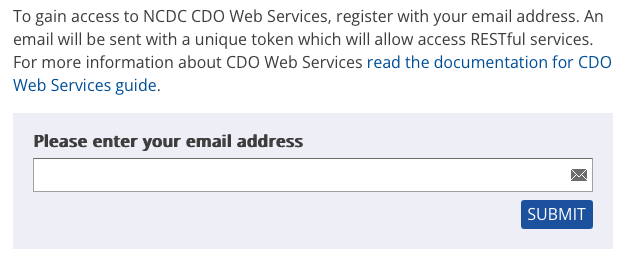

Weather Modeling#
Introduction#
In this lecture, we will learn how to model weather data. We will use the data from the National Oceanic and Atmospheric Administration (NOAA) Global Historical Climatology Network (GHCN) to model the temperature in the United States. The GHCN is a database of daily climate records from thousands of land surface stations across the globe.
Warning {.hide}#
API Token {.hide .smaller-85}#
To download the data, you will need to sign up for an API token on the NOAA website. The National Climatic Data Center (NCDC) provides access to the GHCN data through Climate Data Online (CDO) web services. The API token is used to authenticate your requests to the CDO web services. You can sign up for an API token here.

Python Packages#
We will need the following Python packages to download and analyze the weather data:
requests: to make HTTP requests to the NOAA APIpandas: to work with tabular datamatplotlib: to create plotsscipy: to fit a model to the datapython-dotenv: to load the API token from the.envfile
requirements.txt {.smaller-90}#
A requirements file is a simple text file that contains a list of Python packages that are required for the project. You can create a requirements.txt file in the same directory as this notebook with the following contents:
requests
pandas
matplotlib
python-dotenv
prophet
jupyter
ipywidgets
plotly
You can install the required packages using the following command:
pip install -r requirements.txt
Requirements Versioning {.smaller-90}#
You can specify the version of the required packages in the requirements.txt file. This is referred to as “pinning” the versions of the required packages. For example, to require version 2.25.0 of the requests package, you can add the following line to the requirements.txt file:
requests==2.25.0
You can also specify a range of versions. For example, to require version 2.25.x of the requests package, you can add the following line to the requirements.txt file:
requests>=2.25.0,<2.26.0
API Data Endpoint {.smaller-75}#
The API is described in the NOAA API documentation. We will be using the following data endpoint https://www.ncei.noaa.gov/cdo-web/api/v2/data to download the weather data.
We will specify the following parameters in the query string:
datasetid=GHCND(to specify the dataset Global Historical Climatology Network)stationid=GHCND:USW00093814(to specify the Cincinnati/Northern Kentucky International Airport weather station)datatypeid=TMAX,TMINunits=standard(to specify standard units - Fahrenheit)startdate=<start_date>(to specify the start date)enddate=<end_date>(to specify the end date)limit=1000
Token Security {.smaller-90}#
You should keep your API token secure. Do not share it with others or post it publicly. You can store your API token in a file named .env in the same directory as your code. The .env file should contain the following line:
NOAA_TOKEN=your-api-token
Test Code {.hide .smaller-55}#
import requests
import os
from dotenv import load_dotenv
load_dotenv()
noaa_token = os.getenv("NOAA_TOKEN")
base_url = "https://www.ncdc.noaa.gov/cdo-web/api/v2"
data_endpoint = f"{base_url}/data"
headers = {"token": noaa_token}
params = {
"datasetid": "GHCND",
"stationid": "GHCND:USW00093814",
"startdate": "2024-10-01",
"enddate": "2024-10-31",
"datatypeid": "TMAX,TMIN", # Only temperature data types
"units": "standard", # Use standard units (Fahrenheit)
"limit": 1000
}
response = requests.get(
data_endpoint,
headers=headers,
params=params
)
response.raise_for_status()
if response.status_code == 200:
data = response.json()
Basic Temperature Forecasting {.hide .smaller-85}#
dataclass {.hide .smaller-90}#
In Python, there is a special decorator called dataclass that can be used to create classes that are primarily used to store data. A dataclass automatically generates special methods such as __init__, __repr__, and __eq__ for the class. A dataclass is essentially a class that has boilerplate methods generated automatically.
Import Statements {.smaller-90}#
from dataclasses import dataclass
from datetime import datetime
from datetime import timedelta
from dateutil.relativedelta import relativedelta
import pandas as pd
import requests
import matplotlib.pyplot as plt
from prophet import Prophet
Step 1 {.hide .smaller-60}#
Step 1: We will create a GHCNDStationTemps dataclass to interact with the NOAA API and retrieve historical temperatures from a station.
from dataclasses import dataclass
from datetime import datetime
from datetime import timedelta
@dataclass
class GHCNDStationTemps:
token: str
stationid: str
end_date: datetime = datetime.now().date() - timedelta(days=1)
years_of_history: int = 3
endpoint: str = "https://www.ncdc.noaa.gov/cdo-web/api/v2/data"
Step 1: Testing {.hide .smaller-60}#
from noaa import GHCNDStationTemps
from dotenv import load_dotenv
import os
load_dotenv()
token = os.getenv("NOAA_TOKEN")
stationid = "GHCND:USW00014739"
ghcnd = GHCNDStationTemps(token, stationid, years_of_history=3)
Step 2 {.hide .smaller-60}#
Step 2: We will create a fetch_data method in the GHCNDStationTemps dataclass to fetch the historical temperature data from the NOAA API.
def fetch_data(self):
if self.end_date is None:
self.end_date = datetime.now() - timedelta(days=1)
start_date = self.end_date - relativedelta(years=self.years_of_history)
current_date = start_date
all_data = []
while current_date < self.end_date:
chunk_end = min(current_date + relativedelta(years=1) - timedelta(days=1), self.end_date)
params = {
"datasetid": "GHCND",
"stationid": self.stationid,
"datatypeid": "TMAX,TMIN",
"units": "standard",
"startdate": current_date.strftime("%Y-%m-%d"),
"enddate": chunk_end.strftime("%Y-%m-%d"),
"limit": 1000,
}
print(f"Fetching data from {current_date.date()} to {chunk_end.date()}...")
response = requests.get(self.endpoint, headers={"token": self.token}, params=params)
response.raise_for_status()
data = response.json()
if "results" in data:
all_data.extend(data["results"])
print(f"Retrieved {len(data['results'])} records.")
else:
print(f"No data found for {current_date.date()} to {chunk_end.date()}.")
current_date = chunk_end + timedelta(days=1)
return all_data
Step 2: Testing {.hide .smaller-60}#
from noaa import GHCNDStationTemps
from dotenv import load_dotenv
import os
load_dotenv()
token = os.getenv("NOAA_TOKEN")
stationid = "GHCND:USW00014739"
ghcnd = GHCNDStationTemps(token, stationid, years_of_history=3)
ghcnd.fetch_data()
Step 3 {.hide .smaller-60}#
Step 3: Let’s add a data property to the GHCNDStationTemps dataclass to return the historical temperature data. This property will call the fetch_data method if the data is not already available.
We will add a private _data attribute to the class to store the historical temperature data, initialized to None.
_data: None
Next, modify the fetch_data method to be a private method by adding an underscore _ to the method name.
def _fetch_data(self):
Finally, we will define the data property to return the historical temperature data.
@property
def data(self):
if self._data is None:
print("Data is empty. Fetching data...")
self._data = self.fetch_data()
return self._data
Step 3: Testing {.hide .smaller-60}#
from noaa import GHCNDStationTemps
from dotenv import load_dotenv
import os
load_dotenv()
token = os.getenv("NOAA_TOKEN")
stationid = "GHCND:USW00014739"
ghcnd = GHCNDStationTemps(token, stationid, years_of_history=3)
ghcnd.data
Step 4a {.hide .smaller-60}#
Step 4a: Let’s modify data to return a pandas DataFrame instead of a list of dictionaries. Create a private _convert_to_dataframe static method to convert the raw data into a pandas DataFrame.
@staticmethod
def _convert_to_dataframe(all_data):
"""
Convert raw data into a pandas DataFrame with 'Date', 'TMAX', and 'TMIN' columns.
"""
# Convert to DataFrame and handle missing keys/values (e.g., NaN)
df = pd.DataFrame(all_data)
# Explicitly keep only the required columns
columns_to_keep = ['date', 'datatype', 'value']
if not all(col in df.columns for col in columns_to_keep):
raise ValueError(f"Input data must contain these columns: {columns_to_keep}")
df = df[columns_to_keep]
# Pivot the table to get 'datatype' values as columns
df_pivot = df.pivot(index='date', columns='datatype', values='value')
# Remove the MultiIndex column formatting by renaming or flattening
df_pivot.columns.name = None
df_pivot = df_pivot.reset_index()
# Convert 'date' column to datetime.date type
df_pivot['date'] = pd.to_datetime(df_pivot['date']).dt.date
# Rename columns for better readability
df_pivot.rename(columns={'TMAX': 'Max Temperature (°C)',
'TMIN': 'Min Temperature (°C)',
'date': 'Date'},
inplace=True)
return df_pivot
Step 4b {.hide .smaller-60}#
Step 4b: Modify the data property to return a pandas DataFrame.
@property
def data(self):
if self._data is None:
print("Data is empty. Fetching and converting data...")
raw_data = self._fetch_data()
self._data = self._convert_to_dataframe(raw_data)
return self._data
Step 4: Testing {.hide .smaller-60}#
from noaa import GHCNDStationTemps
from dotenv import load_dotenv
import os
load_dotenv()
token = os.getenv("NOAA_TOKEN")
stationid = "GHCND:USW00014739"
ghcnd = GHCNDStationTemps(token, stationid, years_of_history=3)
ghcnd.data
Step 5 {.hide .smaller-60}#
Step 5: Let’s add a plot method to the GHCNDStationTemps dataclass to plot the historical temperature data.
def plot_temperatures(self):
if self.data is None or self.data.empty:
print("No data available to plot.")
return
plt.figure(figsize=(10, 6))
plt.plot(self.data['Date'], self.data['Max Temperature (°C)'], label='Max Temperature (°C)', color='red')
plt.plot(self.data['Date'], self.data['Min Temperature (°C)'], label='Min Temperature (°C)', color='blue')
plt.xlabel('Date')
plt.ylabel('Temperature (°C)')
plt.title(f'Temperature Trends for Station {self.stationid}')
plt.legend()
plt.grid(True)
plt.tight_layout()
plt.show()
Step 5: Testing {.hide .smaller-60}#
from noaa import GHCNDStationTemps
from dotenv import load_dotenv
import os
load_dotenv()
token = os.getenv("NOAA_TOKEN")
stationid = "GHCND:USW00014739"
ghcnd = GHCNDStationTemps(token, stationid, years_of_history=3)
ghcnd.data
ghcnd.plot_temperatures()
Step 6a {.hide .smaller-60}#
We are now ready to model the temperature data. We will use the prophet package to fit a time series model to the temperature data. The prophet package is a forecasting tool developed by Facebook that is designed for analyzing time series data that display patterns on different time scales.
Step 6b {.hide .smaller-60}#
def forecast_daily_temperatures(self, n_periods=30):
if self.data is None or self.data.empty:
raise ValueError("No data available to forecast.")
# Prepare data for Prophet
df_max = self.data[['Date', 'Max Temperature (°C)']].rename(
columns={'Date': 'ds', 'Max Temperature (°C)': 'y'})
df_min = self.data[['Date', 'Min Temperature (°C)']].rename(
columns={'Date': 'ds', 'Min Temperature (°C)': 'y'})
# Forecasting Max Temperature
max_model = Prophet()
max_model.fit(df_max)
future_max = max_model.make_future_dataframe(periods=n_periods)
max_forecast = max_model.predict(future_max)
# Forecasting Min Temperature
min_model = Prophet()
min_model.fit(df_min)
future_min = min_model.make_future_dataframe(periods=n_periods)
min_forecast = min_model.predict(future_min)
# Create DataFrame with forecasted values
forecast_df = pd.DataFrame({
'Date': max_forecast['ds'][-n_periods:].values,
'Forecast Max Temperature (°C)': max_forecast['yhat'][-n_periods:].values,
'Forecast Min Temperature (°C)': min_forecast['yhat'][-n_periods:].values
})
return forecast_df
Step 6: Testing {.hide .smaller-60}#
from noaa import GHCNDStationTemps
from dotenv import load_dotenv
import os
load_dotenv()
token = os.getenv("NOAA_TOKEN")
stationid = "GHCND:USW00014739"
ghcnd = GHCNDStationTemps(token, stationid, years_of_history=3)
ghcnd.data
ghcnd.plot_temperatures()
forecast = ghcnd.forecast_temperatures(n_periods=12)
ghcnd.data
forecast = ghcnd.forecast_daily_temperatures(n_periods=30)